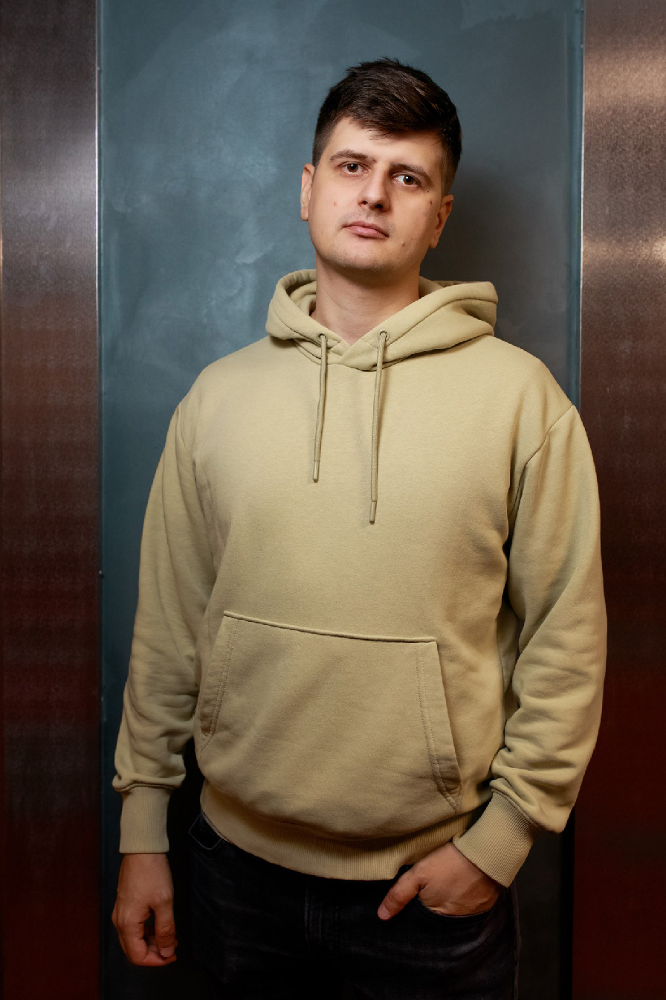

Про меня
Меня зовут Анатолий
Front-End разработкой я занялся не так давно. Долгое время работал в смежной сфере, был интернет-маркетологом. Можно сказать, был по другую сторону создания веб-ресурсов. Занимался SEO-оптимизацией, продвижением ресурсов компаний, настраивал контекстную и таргетную рекламу, писал тексты, создавал визуальный контент, администрировал ресурсы с которыми работал.
Так начался мой путь в сторону web-разработки. Когда мне стало необходимо разобраться в том, как правильно управлять сайтами, вносить новый контент и исправлять ошибки, без обращения к разработчикам, я начал учить верстку и иструменты для самостоятельной разработки сайтов. Так, я решил освоить эту профессию.
Frontend-разработка
Я хорошо разбираюсь в HTML и CSS, знаю основы JavaScript. При верстке применяю методологию БЭМ. Знаю как работать с такими инструментами как Bootstrap, Jquery, GULP. Предпочитаю для установки стилей работать с SCSS.
UI/UX Design
Мой большой опыт в маркетинге, а также насмотренность, я считаю, позволяет мне понимать то, как может выглядеть продукт, который будет удобен пользователю. Возможно, на начальных этапах карьеры это и не будет большим плюсом, но в дальнейшем это может быть очень полезным фактом.